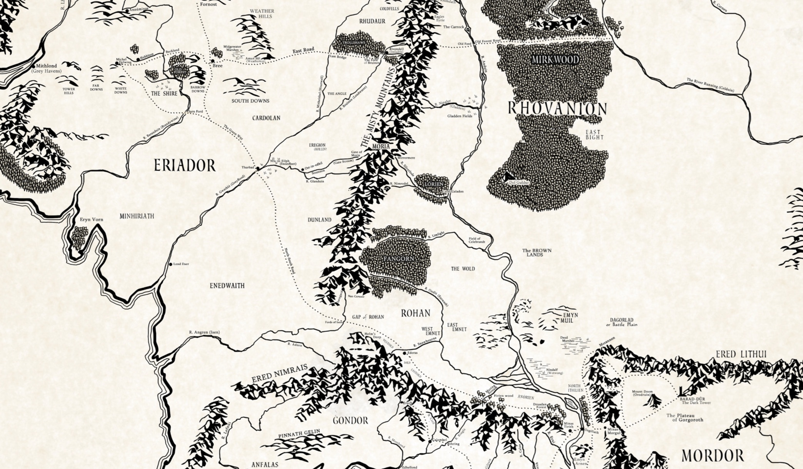
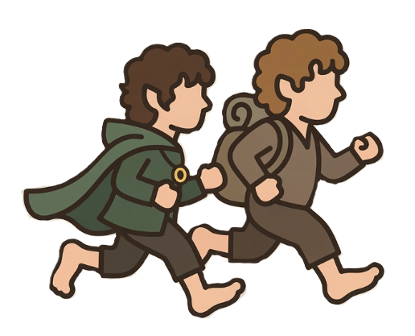

Zpět na nástěnku
Mount Doom Challenge
Naběháno:
0
km
Zbývá:
0
km
Hotovo:
0
%
Zadej dnešní kilometry:
Přidat kilometry
Smazat kilometry


➕ Přiblížit
➖ Oddálit
Tvé cestovatelské deníky (Dosažená místa):
×
Gratulujeme!
Tady bude text o místě...